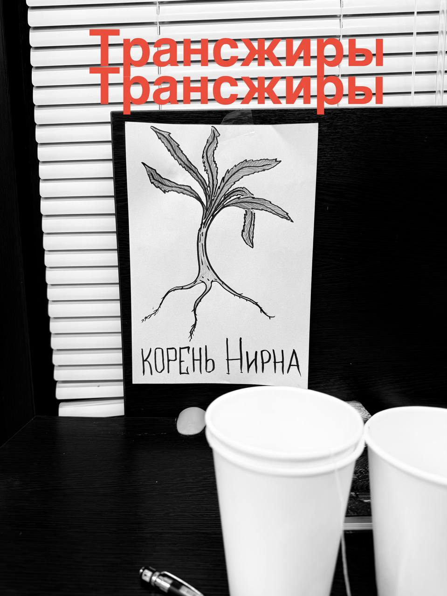

Новый релиз — Корень Нирна
Трансжиры — Корень Нирна
Попадание НА САЙТ инновационного музыкального коллектива: свежий релиз, подборка треков и прямой проход в общий чат. Всё, что нужно, чтобы услышать, обсудить и попробовать «Корень Нирна».
Чат в Telegram
